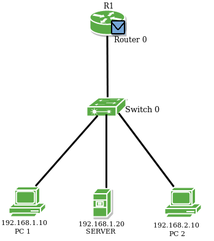

Prerequisite – Access and trunk ports
Switches divide broadcast domain through VLAN (Virtual LAN). VLAN is a partitioned broadcast domain from a single broadcast domain. Switch doesn’t forward packets across different VLANs by itself. If we want to make these virtual LANs communicate with each other, a concept of Inter VLAN Routing is used.
Inter VLAN Routing :
Inter VLAN routing is a process in which we make different virtual LANs to communicate with each other irrespective of where the VLANs are present (on same switch or different switch). Inter VLAN Routing can be achieved through a layer-3 device i.e. Router or layer-3 Switch. When the Inter VLAN Routing is done through Router the it is known as Router on a stick.
Router On a Stick :
The Router’s interface is divided into sub-interfaces, which acts as a default gateway to their respective VLANs.
Configuration :
Here is a topology in which there is a router and a switch and some end hosts. 2 different VLANs have been created on the switch. The router’s interface is divided into 2 sub-interfaces (as there are 2 different VLANs) which will acts as a default gateway to their respective VLANs. Then router will perform Inter VLAN Routing and the VLANs will be communicate with each other.
First we will assign IP address to the host PC1 as 192.168.1.10/24, Server 192.168.1.20/24 and the other host PC2 will have IP address 192.168.2.10/24 manually.
Now, we will make sub-interface of fa0/0 as fa0/0.1 and fa0/0.2 and assign IP address as 192.168.1.1/24 and 192.168.2.1/24 respectively on router’s ports.
r1# int fa0/0.1 r1# encapsulation dot1q 2 r1# ip address 192.168.1.1 255.255.255.0 r1# int fa0/0.2 r1# encapsulation dot1q 3 r1# ip address 192.168.2.1 255.255.255.0
NOTE : Here encapsulation type dot1q is used for frame tagging between the 2 different VLAN. When the switch forwards packet of one VLAN to another, it inserts a VLAN into the Ethernet header.
Now, we will make 2 different VLANs on switch namely VLAN 2 and VLAN 3 giving names HR_dept and sales_dept.
Switch# vlan 2 Switch# name HR_dept Switch# vlan 3 Switch# name sales_dept
Switch# int range fa0/1-2 Switch# switchport mode access Switch# switchport access vlan 2 Switch# int fa0/3 Switch# switchport mode access Switch# switchport access vlan 3
Here, we have assigned VLAN 2 to the specific switch ports fa0/1, fa0/2 and vlan 3 to fa0/3 respectively.
NOTE : int range fa0/1-2 command is used as there are more than one host present in a single VLAN.
Now to check reachability of PC2 from PC1, we will try to PING PC2 from PC1.



From the above figures, we see that the packet is delivered to the router by the switch, because now the broadcast domain have been divided by the different VLANs present on the switch therefore, the packet will be delivered to the default gateway (as PC2 is present on different network) and then to the destination.